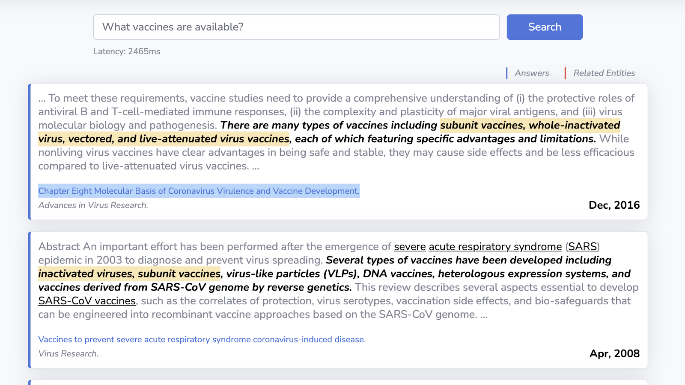
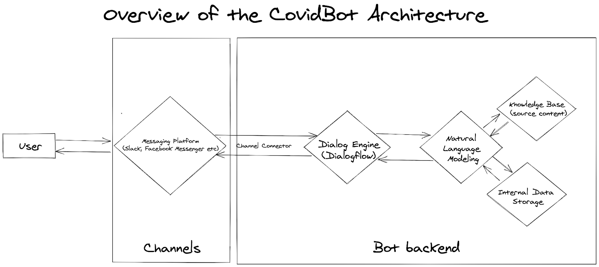
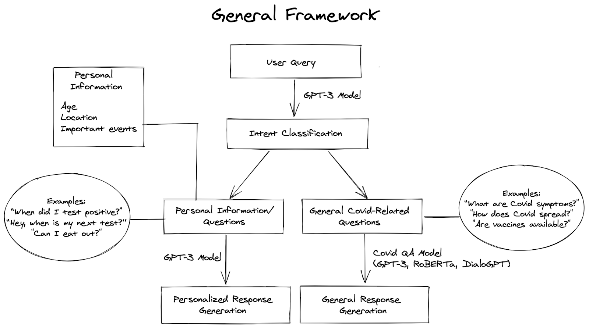
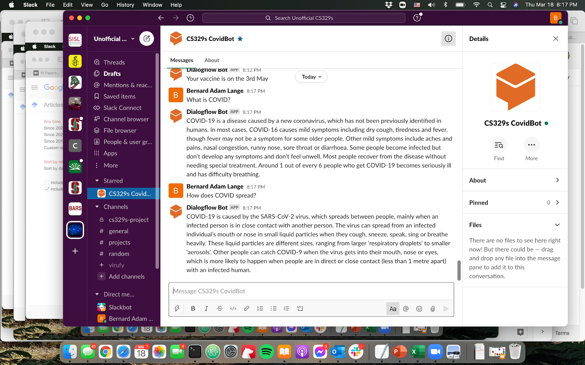
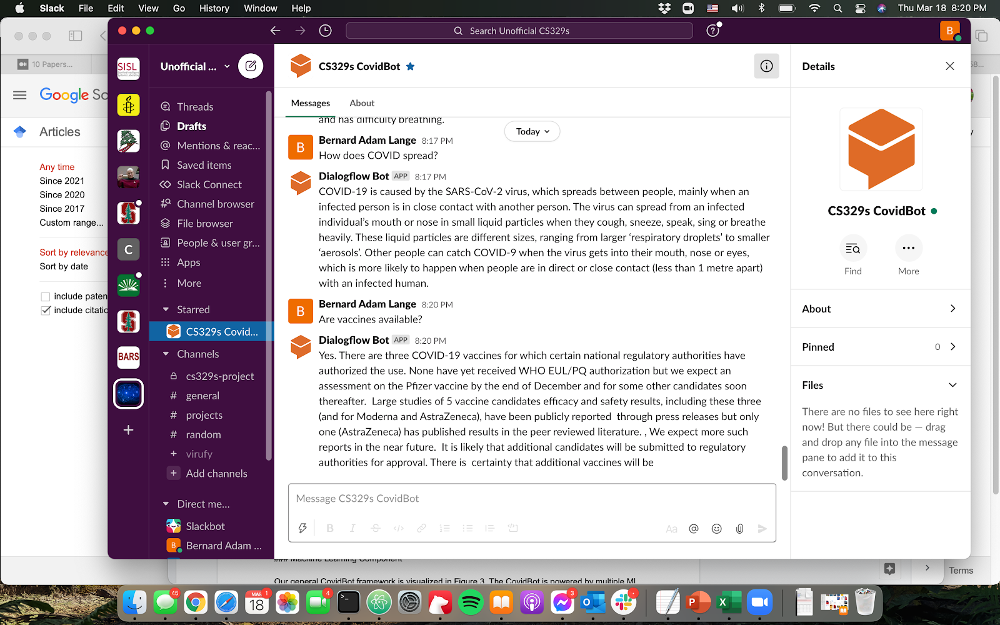
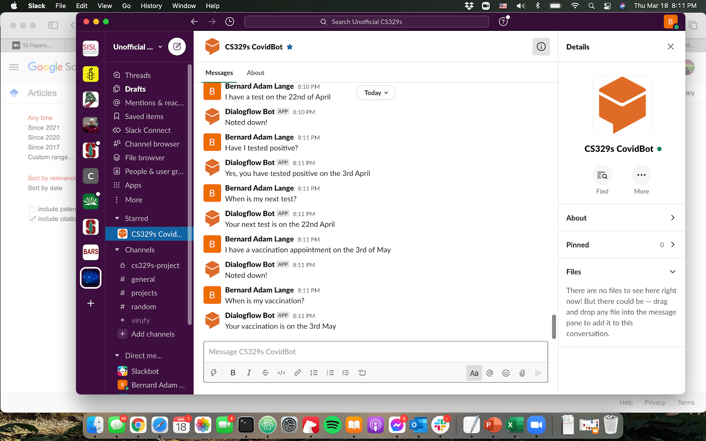

CovidBot Project Report
The Team
-
Andra Fehmiu
-
Bernard Lange
Problem Definition
One year of the global coronavirus pandemic has led to 550,574 deaths and 30,293,016 cases in the United States so far. It has forced the government and authorities to implement various restrictions and recommendations to hinder its spread until a long-lasting solution is determined. In this constantly evolving political and news landscape, it has been challenging for people all over the world, including those in the U.S., to remain informed about Covid-related matters (i.e. Covid-19 symptoms, recommended actions and guidelines, nearest test and vaccination centers, active restrictions and rules, etc). Medical call centers and providers have also been overloaded with volumes of individuals seeking reliable answers to their Covid19-related questions and/or seeking guidance with their Covid-19 symptoms.1
To tackle the challenges that have arisen due to these unusual circumstances, we have decided to build CovidBot, a Covid-19 Chatbot. CovidBot provides easy access to the most up-to-date Covid-19 news and information to individuals in the U.S and, as a result, eases the burden of medical providers. CovidBot enables us to standardize the answers to the most prevalent Covid-19-related questions, such as What are Covid-19 symptoms? and How does Covid spread?, based on the information provided by WHO and CDC and provide them instantaneously and simultaneously to thousands of users seeking assistance. We have also added capabilities for handling user-specific queries that require personalized responses (i.e. When is my next test? When did I test positive?, etc.). Thus, CovidBot is able to answer both general, frequently-asked questions about COVID-19 and user-specific questions.
Having come across multiple articles such as the one by Harvard Business Review about hospitals using AI to battle Covid-19, it was apparent to us that there is a clear need for a CovidBot that could also be easily integrated and used by hospital and medical centers around the U.S. While searching for available open-source code to build chatbots for Covid-19, we realized that the existing Covid question-answering models and chatbots were either limited in their capabilities and/or were not accessible. For example, Deepset’s Covid question-answering model API [2] and UI were taken offline in June 20202. Covid question-answering model deployed by students at Korea University3 [3] provides out of date Covid-related news and information. When we asked “What vaccines are available?”, we were given an answer containing a scholarly article from 2016 about the different types of vaccines in general (see Figure 1) as opposed to our Chatbot’s QA model, which is able to provide an accurate and up-to-date answer to this question by listing the Pfizer and Moderna vaccines (see Figure 4). In addition, none of the Covid chatbots we came across have implemented necessary capabilities to address user-specific queries and provide personalized responses.
 Figure 1. CovidAsk’s response to the user query “What vaccines are available?”
The bot can be used to find the most up-to-date Covid-related information at the time of writing, can provide answers to personal or general questions, and can be easily integrated with various popular social platforms that people use to communicate (e.g. Slack, Facebook Messenger, etc.). The implementation behind the CovidBot is available at https://github.com/BenQLange/CovidBot.
System Design
Our general framework is visualized in Figure 2 and comprises the following modules. Natural Language Modelling module handles the queries and generates responses. The datasets used for training and any general information used or stored during inference is encapsulated in the Knowledge Base. Data-driven models and all the datasets are described in further detail in the Machine Learning Component section. All personal data, e.g. user-bot interaction history, personal information, and analytics, is stored in the Internal Data Storage. Finally, Dialog Deployment Engine module enables interaction with our bot via popular messaging platforms such as Facebook Messenger and Slack. The deployment framework used is Google’s Dialogflow. We have decided to use it for building our conversational interface due to its straightforward integration with our ML system via the webhook service and various popular messaging platforms (e.g. Slack, Facebook Messenger, Skype etc.). This in turn, makes the deployment of the chatbot easier and makes CovidBot easy to use for our end-users.
 Figure 2. Overview of the CovidBot Architecture
 Figure 3. General CovidBot Framework
Machine Learning Component
Our general CovidBot framework is visualized in Figure 3. The CovidBot is powered by multiple ML models running simultaneously. Depending on the type of the query, whether it relates to personal or general COVID-19 information, different models are responsible for response generation.
We build an intent classifier using the GPT-3 model thanks to the OpenAI Beta access. GPT-3 uses the Transformer framework and has 175B trainable parameters, 96 layers, 96 heads in each layer, each head with a dimension of 128. To successfully perform intent classification, GPT-3 requires only a few examples of correct classification. Depending on the intent of the user’s query, we either use a GPT-3 model to generate and extract personalized (user-specific) response or a Covid General QA model that uses either DialoGPT, RoBERTa, or GPT-3 to generate a response. If the query is personal, GPT-3 extracts the type of the information provided, e.g. I have a test on the 2nd of April, and stores it locally. If it is a question, e.g. When was my last negative test?, it loads locally stored information based on which GPT-3 generates the answer.
The answers to general COVID-19 questions are generated by the DialoGPT by default. However, we have also built in an additional capability to pick RoBERTa, or GPT-3. Although the GPT-3 model is a powerful text generation model, we can not fine-tune the model to our tasks and we have a limited number of input tokens. This limits the amount of knowledge about COVID-19 which is provided to the model making it inadequate for our task. For this reason, we build 2 additional models, namely RoBERTa and DialoGPT, that do not have these limitations.
RoBERTa [5] is a retrained BERT model that builds on BERT’s language masking strategy and removes its next-sentence pretraining objective.4 We use the RoBERTa model fine-tuned on a SQuAD-style CORD-195 dataset provided by Deepset, which is publicly available on HuggingFace6. After testing the model performance and inspecting the Covid QA dataset, we observe that a lot of the annotated examples contain non-Covid content, which is reflected in the poor performance of the Covid QA model. Due to this, we fine-tuned the RoBERTa model again using our custom dataset containing Covid-related FAQ pages from the CDC and WHO websites. Although far from ideal, the RoBERTa model results after this iteration were more reasonable, indicating the importance of a larger and higher quality dataset in providing more robust answers. Another important observation made is that even with GPU acceleration, the RoBERTa Covid QA model is slow and would not be suitable for production as is. Thus, to reduce the model throughput, we implemented a retrieval-based RoBERTA model where the retriever scans through documents in the training set and returns only a small number of them that are most relevant to the query. The retrieval methods considered are: TF-IDF, Elastic Search, and DPR (all implemented using the Haystack package). However, even with the retrieval methods implemented, the model is still slower than other models and requires further optimization to be deployed in production.
DialoGPT model is based on the GPT-2 transformer [6] which uses masked multi-head self-attention layers on the web collected data [7]. It is a small 12-layer architecture and uses byte pair encoding tokenizer [8]. The model was accessed through HuggingFace. It applies a similar training regime as OpenAI’s GPT-2 where conversation generation is framed as language modelling task with all previous dialog turns concatenated and ended with the end-of-text token.
To fine-tune the pre-trained DialoGPT and RoBERTa models, we build scraper functions that collect data from the CDC and WHO FAQ pages. Our custom Covid QA dataset has 516 examples of Covid-related questions and answers and both models’ performance improves noticeably after fine-tuning them with this dataset.
System Evaluation
In order to evaluate the performance of our Covidbot system, we integrated each of the 3 response generation models into the messenger platform using Dialogflow and simulated multiple user-bot interactions per session. We validated the performance of our system by testing it using different types of queries; these queries include: semantically different queries, queries with different intents (personal vs. general) as well as queries that are both implicitly and explicitly related to Covid (e.g. ”implicit” queries are “What is quarantine?”, “Are vaccines available?” vs. “explicit” queries are “What are Covid-19 symptoms?”, “What is Covid-19?”).
We also evaluated the latency and throughput of our system in generating responses for queries with different complexity levels and also in generating responses when multiple users are using it simultaneously.
We also asked our peers to interact with the CovidBot and give us feedback based on the bot’s responses to their queries, and they were all satisfied with the performance of our bot. They thought the answers CovidBot gave were reasonable and the only remark they made was that the bot’s responses occasionally contained incomplete sentences, which is a limitation we are aware of and will work on improving for the next iteration.
If we had more users testing the system and we had an environment that resembles more the real-time production environment then we would also analyze some user-experience metrics (i.e. the average number of questions asked, the total number of sessions that are simultaneously active), as well as bot-quality metrics (i.e. the most frequent responses given, percentage of fallback responses where the chatbot did not know the answer to a question). We would also integrate an optional CovidBot rating feature that uses “thumbs up/down” buttons in order to allow users to rate their experience using the system at the end of each session.
Application Demonstration


 Figure 4. CovidBot Demonstration for Personal and General Covid Question-Answering
In terms of the core interface decisions, we chose to build a chatbot through a messenger platform as a channel. We use Dialogflow, Google’s conversational interface designer, because it allows us to seamlessly integrate our ChatBot with different, popular messenger platforms and other types of deployment methods, such as Google Assistant.
As can be seen in Figure 4, the latest version of our CovidBot is deployed on Slack and provides a visual interface that can appear on both desktop and mobile. This allows users to easily access the CovidBot without having to open their web browser and makes their user experience smoother. We assume a good amount of users are familiar with similar interactions to the ones they have with our CovidBot. The bot is initialized by asking the user about the model they want to use for response generation, giving them the freedom to pick and explore the models on their own. By default or if a user inputs an invalid model name, we use the DialoGPT model. After initializing a response generating model, we begin by asking our CovidBot more general Covid questions, such as: “What are the symptoms of Covid-19?”, “Are there vaccines available?”. For all questions, we receive satisfactory and up-to-date responses as shown in Figure 4. When the CovidBot identifies a personal statement, e.g. “I have a test on the 22nd of April”, it will store it locally and reply “Noted down!”. Based on the locally stored information, the bot is capable of answering personal questions, such as “When is my next test?”.
Given that there is already a significant amount of Covid-related news and information on the web, we believe that deploying CovidBot is essential in this ever-changing Covid-19 landscape which can (and does) become overwhelming at times for a lot of people.
As part of this project, we have built an AI-driven bot because text generation is a difficult task especially in this context where the term “Covid” has multiple synonyms. So, given the gravity of the Covid-19 pandemic and the need for spreading accurate Covid-related information, it is highly important to build a model that is able to recognize, analyze, and understand a wide variety of responses and derive meaning from implications without relying solely on syntactic commands.
Reflection
We believe that we have achieved all our major objectives with the CovidBot framework. All models trained on the dataset scraped from the WHO and CDC websites outperformed our expectations both in terms of information accuracy, and inference time. They are also efficient enough to enable regular updates/re-trainings on a daily basis as more information becomes available. Model deployment with Google’s Dialogflow to Slack was also surprisingly easy making the bot easy to share. One of the issues which should be addressed is our reliance on GPT-3 provided by the OpenAI API Beta Access to perform intent classification and personal queries handling. However, we think that training both intent classification and personal response generation shouldn’t be more challenging than the general response generation achieved with DialoGPT and RoBERTa.
We would like to thank CS329s course staff for advice during the development of the CovidBot and for the access to the OpenAI API Beta Access.
Broader Impacts
The intended uses of the CovidBot include getting the most up-to-date Covid-related news and receiving personal reminders about Covid-related matters (i.e. testing dates etc). However, we do not intend to have the CovidBot substitute doctors, which is why it is highly important for us to ensure that users understand that they should not be using the bot to seek for serious medical advice as it could have significant health consequences for the users. We have attempted to mitigate harms associated with this unintended use of the system by carefully picking the examples included in our custom Covid QA dataset, which come from trusted health organizations and agencies that also take precautions when answering FAQs in their website in order to prevent the same unintended uses as ours. As a concrete example, there is a publicly available dataset that includes examples of Covid-related conversations between patients and doctors, but we decided to not include it in our model fine-tuning step in order to mitigate the harms associated with having our bot respond like a doctor.
In the future, we could perform analysis of the type of queries being inputted into our system and see if we can detect a pattern in how users interact with the bot. We could also implement features that are easy to notice (i.e. a disclaimer below the query bar) in order to remind users of the intended use cases of our CovidBot.
Contributions
Andra worked on data collection and preprocessing, the RoBERTa models, and integration of models for chatbot deployment using Dialogflow.
Bernard worked on the DialoGPT models, GPT-3 integration and CovidBot system design.
References
[1] Wittbold, K., Carroll, C., Iansiti, M., Zhang, H. and Landman, A., 2021. How Hospitals Are Using AI to Battle Covid-19. [online] Harvard Business Review. Available at: <https://hbr.org/2020/04/how-hospitals-are-using-ai-to-battle-covid-19> [Accessed 19 March 2021].
[2] Möller, T., Reina, A., Jayakumar, R. and Pietsch, M., 2020, July. COVID-QA: A Question Answering Dataset for COVID-19. In Proceedings of the 1st Workshop on NLP for COVID-19 at ACL 2020.
[3] Lee, J., Yi, S.S., Jeong, M., Sung, M., Yoon, W., Choi, Y., Ko, M. and Kang, J., 2020. Answering questions on covid-19 in real-time. arXiv preprint arXiv:2006.15830.
[4] Brown, T.B., Mann, B., Ryder, N., Subbiah, M., Kaplan, J., Dhariwal, P., Neelakantan, A., Shyam, P., Sastry, G., Askell, A. and Agarwal, S., 2020. Language models are few-shot learners. arXiv preprint arXiv:2005.14165.
[5] Liu, Y., Ott, M., Goyal, N., Du, J., Joshi, M., Chen, D., Levy, O., Lewis, M., Zettlemoyer, L. and Stoyanov, V., 2019. Roberta: A robustly optimized bert pretraining approach. arXiv preprint arXiv:1907.11692.
[6] Zhang, Y., Sun, S., Galley, M., Chen, Y.C., Brockett, C., Gao, X., Gao, J., Liu, J. and Dolan, B., 2019. Dialogpt: Large-scale generative pre-training for conversational response generation. arXiv preprint arXiv:1911.00536.
[7] Radford, A., Wu, J., Child, R., Luan, D., Amodei, D. and Sutskever, I., 2019. Language models are unsupervised multitask learners. OpenAI blog, 1(8), p.9.
[8] Sennrich, R., Haddow, B. and Birch, A., 2015. Neural machine translation of rare words with subword units. arXiv preprint arXiv:1508.07909.